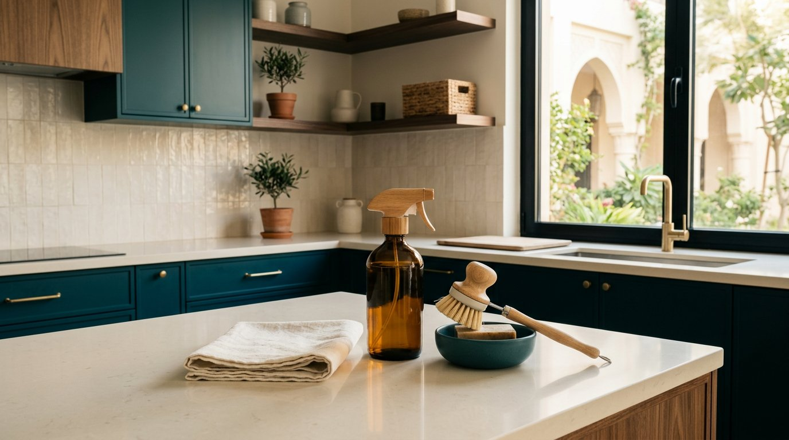

نصائح منزلية
ترتيب المنزل في 15 دقيقة يوميًا: خطة عملية
خطة عملية لترتيب المنزل في 15 دقيقة يوميًا فقط: جدول أسبوعي، قواعد ذهبية، وأدوات تساعدك على الحفاظ على بيت مرتب دائمًا.
تنظيم الثلاجة ومنع هدر الطعام: المناطق الصحيحة لوضع الأطعمة، درجات الحرارة المثالية، حفظ بقايا الطعام، ونظام الأولويات.

اضبط الثلاجة على 4 درجات مئوية أو أقل، وضع الأطعمة الجاهزة في الأعلى واللحوم النيئة في وعاء محكم على الرف السفلي، واكتب تاريخ الحفظ على البقايا. أنشئ صندوقًا واضحًا بعنوان «استخدم أولًا» وراجعه قبل التسوق. التنظيم الجيد لا يطيل صلاحية الطعام بلا حدود؛ عند الشك في السلامة تخلّص منه.
| المكان | ما يناسبه | السبب |
|---|---|---|
| الرف العلوي | أطعمة جاهزة وبقايا محكمة | بعيدة عن سوائل الطعام النيئ |
| الرف الأوسط | ألبان وبيض في عبوته | حرارة أكثر ثباتًا من الباب |
| الرف السفلي | لحوم وأسماك نيئة داخل وعاء | تقليل خطر التسرب على الطعام |
| الأدراج | خضار وفاكهة حسب إعداد الرطوبة | الحفاظ على القوام مدة أطول |
| الباب | صلصات ومشروبات أقل حساسية | أكثر مناطق الثلاجة تغيرًا في الحرارة |
كم مرة رميت طعامًا منسيًا في زاوية الثلاجة؟ كثير من الطعام يُهدر لأنه يُشترى بلا خطة أو يُنسى حتى يفسد، وقد تساهم الثلاجة غير المنظمة في ذلك: ما لا تراه تنساه، وما تنساه يفسد. تنظيم الثلاجة ليس رفاهية؛ إنه أسهل طريقة لتوفير المال وتقليل الهدر.
الجزء الأكثر استقرارًا في الحرارة. ضع فيه: بقايا الطعام، الأطعمة الجاهزة، الزبادي، والمشروبات. كل ما تأكله مباشرة — وضعه في متناول اليد يمنع نسيانه.
الحليب، الجبن، البيض (في علبته الأصلية لا في باب الثلاجة — الباب أدفأ). هذه المنتجات حساسة للحرارة، والرف الأوسط مثالي لها.
أبرد منطقة في الثلاجة. ضع اللحوم النيئة والأسماك هنا في أطباق مغلقة لمنع تسرب سوائلها إلى الأطعمة الأخرى. هذا الموقع يطيل عمرها ويحافظ على سلامتها.
الأدراج تحافظ على الرطوبة المناسبة. لكن انتبه: لا تخلط كل شيء معًا. اترك الخضار الورقية (تتلف بسرعة) في درج منفصل أو في كيس مفتوح، والفواكه التي تنتج غاز الإيثيلين (التفاح، الموز) بعيدة عن الخضار الحساسة له.
الباب يتعرض لفتح وإغلاق مستمر، فحرارته أقل ثباتًا. ضع فيه فقط: الصلصات، المخللات، العصائر، والماء. لا تضع البيض أو الحليب في الباب مهما كان التصميم يوحي بذلك.
عند شراء البقالة، حرّك الأطعمة القديمة إلى الأمام وضع الجديدة خلفها. هذه العادة البسيطة تضمن أنك تستخدم الأقدم أولًا قبل انتهاء صلاحيته. استخدم أيضًا علبًا شفافة لبقايا الطعام — ما تراه تأكله، وما لا تراه يفسد في الخلف.
اضبط الثلاجة على 4 درجات مئوية (2-4 درجات مثالية) والفريزر على -18. درجة أبرد من اللازم تهدر الكهرباء وتجمّد الخضار، وأدفأ من اللازم تخاطر بفساد الأطعمة. ضع ترمومتر صغيرًا للتحقق من الدقة.
ثلاجة منظمة ليست فقط أجمل مظهرًا؛ إنها توفر المال، تحفظ الصحة، وتقلل هدر الطعام الذي يؤثر على البيئة. ابدأ هذا الأسبوع بجلسة ترتيب واحدة: أخرج كل شيء، نظف الرفوف، وأعد ترتيبه حسب خريطة المناطق الصحيحة. ستفاجأ كم طعامًا كنت تخسره دون أن تدري.
الرف العلوي لأطعمة جاهزة، الرف الأوسط للألبان والبيض، الدرج السفلي للخضار بأكياس مهوّاة. ضع اللحوم في أدنى رف لتفادي تناقل عصارتها لباقي الطعام. غلّف بقايا الطعام جيدًا وسمّها بتاريخ، ورتّبها بحيث تُستهلك الأقدم أولًا.
رُوجعت المعلومات العامة في هذا المقال بالاستناد إلى المصادر التالية. الروابط الخارجية قد تُحدّث محتواها بمرور الوقت.
خطة عملية لترتيب المنزل في 15 دقيقة يوميًا فقط: جدول أسبوعي، قواعد ذهبية، وأدوات تساعدك على الحفاظ على بيت مرتب دائمًا.
دليل تنظيف المنزل بمواد بسيطة مع جدول للأسطح واحتياطات السلامة والمواد التي لا يجوز خلطها، والفرق بين التنظيف والتعقيم.
طرق عملية لتقليل الروائح الكريهة في المنزل: تحديد المصدر، تنظيف المطبخ والحمام، تحسين التهوية، ومتى تحتاج إلى فني.